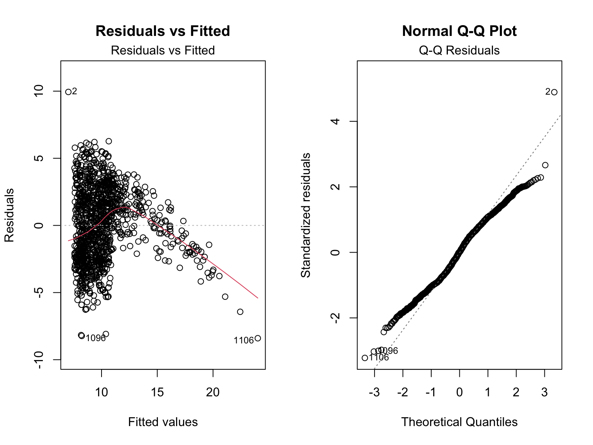

library(rvest)
library(dplyr)
library(tidyverse)
library(httr)
library(ggplot2)
library(tidyr)
library(maps)
library(knitr)
library(viridis)
library(broom)
knitr::opts_chunk$set(
fig.width = 8,
fig.asp = 0.6,
out.width = "80%"
)
theme_set(theme_minimal() + theme(legend.position = "right"))
options(
ggplot2.continuous.colour = "viridis",
ggplot2.continuous.fill = "viridis"
)
scale_colour_discrete = scale_colour_viridis_d
scale_fill_discrete = scale_fill_viridis_d
rm(list = ls())
country_overall <- read.csv("data/country_overall.csv")
esports_top100 <- read.csv("data/esports_earnings_top100_overall.csv")
top500_365 <- read.csv("data/top500_365.csv")
earnings_country <- read.csv("data/Earnings_country_2018_2024.csv")
earnings_topgame <- read.csv("data/Earnings_topgame_2018_2024.csv")
country_overall$Total_Earnings <- as.numeric(gsub("[\\$,]", "", country_overall$Total_Earnings))
esports_top100$Total_Earnings <- as.numeric(gsub("[\\$,]", "", esports_top100$Total_Earnings))
top500_365$`Total..Last.365.Days.` <- as.numeric(gsub("[\\$,]", "", top500_365$`Total..Last.365.Days.`))
earnings_country$Overall_Earnings <- as.numeric(gsub("[\\$,]", "", earnings_country$Overall_Earnings))
earnings_topgame$Total_Earnings <- as.numeric(gsub("[\\$,]", "", earnings_topgame$Total_Earnings))In this section, we conduct statistical modeling and analysis to investigate factors influencing total earnings in esports games. The analysis begins with t-tests to examine differences in earnings across countries over multiple years, assessing whether the industry demonstrated resilience during the COVID-19 pandemic by rebounding after a significant decline in 2020. This is followed by linear regression with interaction terms, residual diagnostics, and prediction visualization to further explore the factors impacting total earnings.
We consolidate earnings data across four years (2018, 2019, 2020, and
2021) by performing an iterative inner join on the Countries column.
Each year’s data is first filtered, renamed for clarity
(Earnings_
paired_data <- reduce(
list(
earnings_country %>% filter(Year == 2018) %>% select(Countries, Earnings_2018 = Overall_Earnings),
earnings_country %>% filter(Year == 2019) %>% select(Countries, Earnings_2019 = Overall_Earnings),
earnings_country %>% filter(Year == 2020) %>% select(Countries, Earnings_2020 = Overall_Earnings),
earnings_country %>% filter(Year == 2021) %>% select(Countries, Earnings_2021 = Overall_Earnings)
),
inner_join,
by = "Countries"
)Null Hypothesis (H₀): There is no significant difference in esports earnings between 2018 (pre-pandemic) and 2019 (pandemic onset). Alternative Hypothesis (H₁): Esports earnings in 2018 are significantly different from 2019, reflecting the impact of the pandemic.
Null Hypothesis (H₀): There is no significant difference in esports earnings between 2019 (pandemic onset) and 2020 (initial pandemic impact). Alternative Hypothesis (H₁): Esports earnings in 2019 are significantly different from 2020, reflecting the industry’s resilience or adaptation during the initial pandemic year.
Null Hypothesis (H₀): There is no significant difference in esports earnings between 2020 (pandemic onset) and 2021 (recovery phase). Alternative Hypothesis (H₁): Esports earnings in 2021 are significantly different from 2020, indicating a recovery or continued decline.
# Function for t-tests
perform_t_test <- function(data, col1, col2) {
t_test <- t.test(data[[col1]], data[[col2]], paired = TRUE)
tidy_results <- broom::tidy(t_test)
return(tidy_results)
}
# Apply t-tests to year pairs
t_test_results <- list(
`2018 vs 2019` = perform_t_test(paired_data, "Earnings_2018", "Earnings_2019"),
`2019 vs 2020` = perform_t_test(paired_data, "Earnings_2019", "Earnings_2020"),
`2020 vs 2021` = perform_t_test(paired_data, "Earnings_2020", "Earnings_2021")
)
# Combine results into a table
combined_results <- purrr::map_dfr(t_test_results, ~., .id = "Year Comparison")
combined_results %>%
kable(digits = 5, caption = "Paired T-Test Results for Earnings Between Years")| Year Comparison | estimate | statistic | p.value | parameter | conf.low | conf.high | method | alternative |
|---|---|---|---|---|---|---|---|---|
| 2018 vs 2019 | -545207.8 | -3.36884 | 0.00104 | 111 | -865901.2 | -224514.4 | Paired t-test | two.sided |
| 2019 vs 2020 | 772820.2 | 3.54599 | 0.00057 | 111 | 340953.8 | 1204686.7 | Paired t-test | two.sided |
| 2020 vs 2021 | -984980.7 | -3.17808 | 0.00192 | 111 | -1599126.3 | -370835.1 | Paired t-test | two.sided |
The paired t-test results reveal significant year-over-year changes in esports earnings between 2018 and 2021. From 2018 to 2019, earnings increased significantly, with 2019 showing an average increase of $545,207.8 compared to 2018 (t = -3.37, p = 0.00104). During the initial year of the COVID-19 pandemic (2019 to 2020), earnings surged by an average of $772,820.2 (t = 3.55, p = 0.00057), highlighting the industry’s resilience, likely driven by a shift to online platforms and increased viewership during global lockdowns. However, from 2020 to 2021, earnings declined significantly by $984,980.7 on average (t = -3.18, p = 0.00192), suggesting potential challenges in sustaining growth as the pandemic subsided and market dynamics normalized. These findings demonstrate the esports industry’s adaptability during the pandemic but also highlight the importance of addressing post-pandemic challenges to ensure continued growth.
Summary of Trends Pre-Pandemic Growth (2018 to 2019): Earnings grew significantly between 2018 and 2019, reflecting pre-pandemic growth trends in the esports industry.
Pandemic Resilience (2019 to 2020): Earnings increased significantly during the pandemic’s first year (2020), demonstrating the esports industry’s resilience, likely due to the shift to online platforms and increased viewership during global lockdowns.
Post-Pandemic Decline (2020 to 2021): Earnings declined significantly in 2021, indicating possible challenges in maintaining pandemic-driven growth as in-person events resumed and market dynamics normalized.
We clean the data by removing special characters, converting variables to numeric types, and creating additional features such as game frequency and encoded year.Frequency Represents the number of times each game appears in the dataset across years.
# Clean and process `Game` data
data <- earnings_topgame %>%
mutate(
Total_Earnings = as.numeric(gsub("[^0-9.]", "", Total_Earnings)),
Total_Players = as.numeric(gsub("[^0-9]", "", Total_Players)),
Total_Tournaments = as.numeric(gsub("[^0-9]", "", Total_Tournaments))
) %>%
drop_na() # Remove rows with missing values
# Count occurrences of each game
game_counts <- data %>%
count(Game, name = "Frequency")
# Ensure both objects are data frames
data <- as.data.frame(data)
game_counts <- as.data.frame(game_counts)
# Perform a safe join
data <- left_join(data, game_counts, by = "Game")
# Add a numerical encoding for Year
data <- data %>%
mutate(Year = as.numeric(as.factor(Year)))We conducted a linear regression analysis to model
log(Total_Earnings) based on the following predictors:
Year, Total_Players,
Total_Tournaments, Frequency, and an
interaction term (Total_Players:Total_Tournaments). Below
is a summary of the key findings.
data <- data %>%
mutate(Total_Earnings = ifelse(Total_Earnings <= 0, 1, Total_Earnings))
data |>
lm(log(Total_Earnings) ~ Year + Total_Players * Total_Tournaments + Frequency, data = _) |>
broom::tidy() |>
knitr::kable(digits = 5)| term | estimate | std.error | statistic | p.value |
|---|---|---|---|---|
| (Intercept) | 7.06984 | 0.22269 | 31.74729 | 0.00000 |
| Year | 0.13116 | 0.04362 | 3.00722 | 0.00269 |
| Total_Players | 0.00515 | 0.00032 | 16.12860 | 0.00000 |
| Total_Tournaments | 0.01188 | 0.00163 | 7.27727 | 0.00000 |
| Frequency | 0.35930 | 0.03911 | 9.18629 | 0.00000 |
| Total_Players:Total_Tournaments | -0.00001 | 0.00000 | -12.03882 | 0.00000 |
model_interaction <- lm(log(Total_Earnings) ~ Year + Total_Players * Total_Tournaments + Frequency, data = data)
summary(model_interaction)##
## Call:
## lm(formula = log(Total_Earnings) ~ Year + Total_Players * Total_Tournaments +
## Frequency, data = data)
##
## Residuals:
## Min 1Q Median 3Q Max
## -8.3667 -2.1928 0.0397 2.1298 9.9448
##
## Coefficients:
## Estimate Std. Error t value Pr(>|t|)
## (Intercept) 7.070e+00 2.227e-01 31.747 < 2e-16 ***
## Year 1.312e-01 4.362e-02 3.007 0.00269 **
## Total_Players 5.152e-03 3.194e-04 16.129 < 2e-16 ***
## Total_Tournaments 1.188e-02 1.633e-03 7.277 6.16e-13 ***
## Frequency 3.593e-01 3.911e-02 9.186 < 2e-16 ***
## Total_Players:Total_Tournaments -8.054e-06 6.690e-07 -12.039 < 2e-16 ***
## ---
## Signif. codes: 0 '***' 0.001 '**' 0.01 '*' 0.05 '.' 0.1 ' ' 1
##
## Residual standard error: 2.724 on 1194 degrees of freedom
## Multiple R-squared: 0.4207, Adjusted R-squared: 0.4183
## F-statistic: 173.4 on 5 and 1194 DF, p-value: < 2.2e-16All predictors, including the interaction term, are statistically significant (p<0.05). Total_Players, Total_Tournaments, and Frequency show particularly strong effects. The adjusted R-square value is approximately 0.42, indicating that the model explains 42% of the variation in log(Total_Earnings).
# Residual plots
par(mfrow = c(1, 2)) # Arrange plots in a 1x2 grid
# Residuals vs Fitted
plot(model_interaction, which = 1, main = "Residuals vs Fitted")
# Normal Q-Q plot
plot(model_interaction, which = 2, main = "Normal Q-Q Plot")
The model provides significant insights into the predictors of esports earnings, with key variables such as Total_Players, Total_Tournaments, and Frequency showing strong effects. However, diagnostic plots reveal potential issues:
Non-linearity and Heteroscedasticity: Residuals suggest the model may not fully capture the relationship between predictors and earnings, especially for extreme values. Outliers: Points like 219, 299, and 824 significantly deviate, indicating the need for robust methods or further investigation. Normality: While most residuals align with normality, tail deviations highlight areas for improvement.
To refine the model, feature engineering, non-linear terms, and robust methods could enhance predictive performance and better handle anomalies.